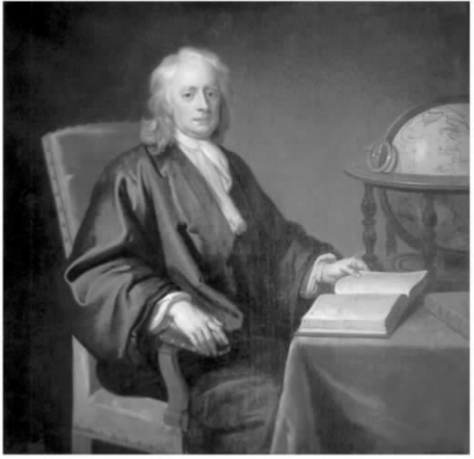

在其生命的最后十年中，牛顿继续在皇家学会和造币厂履行多项行政职责。然而，他的健康状况越来越不利于他执行这些公务。1725年，在凯瑟琳和约翰·孔杜伊特的劝说下，牛顿搬到肯辛顿地区居住。那里远离伦敦有害的烟雾，气候对健康更为有益。牛顿智力方面的干劲也衰退了，但他每天还会花好几个小时研究预言、教会史和年表。1726年，《原理》第三版出版，由亨利·彭伯顿编辑，不过这一版并没有给第二版增加多少内容。
虽然牛顿的创新能力早已枯竭了，但他依然是全欧洲最卓越的自然哲学家。几十年来，他将自己的弟子安排到荷兰与英国主要大学的最高职位上。在没有机会担任这些职位的时候，他的追随者就通过无数的书籍和系列讲座宣传牛顿的哲学。到18世纪20年代，牛顿的学说体系在英国已取得了至高的统治地位，但在法国，牛顿体系被人完全接受还需要十年之久。除了伏尔泰、弗朗切斯科·阿尔加罗蒂、夏特莱侯爵夫人等人的出色宣传之外，促使法国人接受牛顿学说的还有对秘鲁和拉普兰进行的科学探测，这次探测证明正如牛顿所断言的那样，地球在两极是扁平的。
牛顿仍在孜孜不倦地探究宗教真理。不过，他变得更加谨慎小心，不愿轻易拿当代事件来解读预言的应验。在18世纪20年代所写的一份手稿中，牛顿将“审判日”最早定在2060年，让那些希望“千禧年”迅速到来的人大为气馁。对于一个相信应该用历史事实解释预言的人来说，以推测为主的未来学没有什么用武之地。牛顿所写的大量关于早期教会历史的手稿都保留了下来，其中许多都写于他与莱布尼茨的争论期间，而且大都与那场争论有关。这些手稿研究了基督教最初的历史。牛顿对喀巴拉主义者、诺斯替教教徒等许多异端群体篡改真正教义的方式发生了兴趣。他发现这些群体用形而上学腐化了教义，“将经文从道德意义扭曲到形而上的意义上去了”。
在孔杜伊特看来，牛顿晚年最重要的著作就是一篇名为《和平提议或趋向和平的教会体制》的论文。基督教的原则要从基督和使徒“明确的话语”中去寻找，而“不应从玄学和哲学”中去寻找。而且现在看来，这些原则也不见得非要在《圣经》中才能找到。各个民族原先都只有同一个宗教，这个宗教的基本戒律是：
毕达哥拉斯、苏格拉底、孔子等人掌握了这种知识。后来，这种知识渐渐成了异教徒的道德哲学，成了“各民族的道德律”——尽管这些民族大都转向了偶像崇拜。
偶像崇拜违反了牛顿眼中伟大戒律的第一条：要崇拜、尊敬上帝。我们不可将给上帝的崇拜让给其他的创造物，“也不可将任何荒谬或矛盾之事归因于上帝的本性或行动，以免我们亵渎或否认上帝，或者向无神论或反宗教跨近一步”。欲望和骄傲——“对女人、财富和荣誉的过度渴望以及娇气、贪求和野心”——是违反第二大戒律的最恶劣的两大罪行。实践正义、推己及人、爱邻如己，这便是“仁爱”。这样，基督教就给人们新加了一项义务——善待他人。不过，就像弗拉姆斯蒂德所指出的那样，并非人人都同意牛顿在自己的生活中曾体现过善待他人的品德。
至于基督教团体，牛顿声称所有受过洗礼的人，即使不属于哪个具体的教会或教派，也都是基督身体的一部分或“教会”的成员。人们在受洗之后应该研习预言，对比《旧约》与《新约》，“相互教导温顺和慈善的美德，不将个人见解强加于对方，也不因个人见解而争吵”，如此便能在神恩的沐浴下成长。在英格兰教会中，人们通过按手礼被纳入教会。如果他们违反了某条他们受洗时宣布遵从的信条，就会被逐出教会，但这并不会取消他们通过受洗而被赋予的那个更大教会的成员资格。终其一生，牛顿虽然轻视英国国教的许多教条，但仍能公开表白对国教的信仰。对于像他这样属于少数蒙选者的人而言，个人内心的宗教信仰才是最重要的。
在其最后的岁月中，牛顿还花了许多时间专心研究年表。在牛顿之前的几个世纪中，确定古代历史事件的时间以及根据神话即历史观来协调不同民族的历史和系谱都曾吸引了新教国家和天主教国家中顶尖学者的注意。虽然《旧约》是古代历史最古老、最真实的来源，但历史学家还是使用各种技巧来调和《旧约》和异教徒的历史，因为异教徒的历史有时也会涉及《旧约》中记载的同一历史事件。从16世纪晚期起，历史学家便开始利用天文学技巧来帮助他们更为准确地确定具体的历史事件。
牛顿对年表的广泛钻研表明他对古典文学和《旧约》拥有渊博的知识。牛顿试图从根本上重新确定有记录的历史的日期，缩短有记录的历史的长度。他采用了非常新颖的、基于日食与月食的证据，采取了一种极端的论点：历史上诸王统治的平均期限是十八到二十年。除了他所敬仰的希罗多德的记载之外，牛顿谴责了其他所有异教徒的历史，认为其中所载的系谱过于膨胀。
早在17世纪80年代，牛顿就已致力于精确测定基督教以前的记录的年代，但他的大部分年表著作则写于18世纪早期，即他担任造币厂厂长的时候。他的年表的一份《概要》最初是以法文翻译的形式出现的。这份《概要》的英文原稿是他多年前托付威尼斯伯爵安东尼奥·康蒂转给卡罗琳公主的。法文《概要》的面世让牛顿大为恼火。紧接着，对《概要》核心论点的驳斥纷至沓来，其中法国大学者尼古拉斯·弗里莱特和艾蒂安·苏西耶的批驳显得尤其突出。牛顿利用其生命的最后几年，撰写了一部篇幅比《概要》长得多的年表著作。这部著作于1728年出版，名为《修订版古王国年表》，不过这已是牛顿去世之后的事了。
牛顿年表体系的核心是确定阿尔戈英雄远航的年代。在那期间，天文学家马人喀戎 [13] 和穆赛欧斯（俄耳普斯的老师，他自己也是一位阿尔戈英雄）曾制作了一个“天球”，在上面画出了那时可以观察到的星座。牛顿利用骇人听闻、晦涩难懂的证据确定了喀戎在天球上安置二分点的位置，将其与《原理》中提出的周年分点岁差进行对比，得出那次探险的年代应在公元前936－公元前937年左右。对牛顿的年代考据事业至关重要的是，他同意犹太历史学家约瑟夫斯（希罗多德的追随者）的观点，认为埃及法老塞索斯特里与塞撒克是同一人。这个法老就是在所罗门死后摧毁了圣殿的那个埃及王——《列王记上》记载了他对朱迪亚地区的入侵。塞索斯特里（即欧西里斯或巴克斯）在阿尔戈英雄远航之前的那一代盛极一时，这一事实让牛顿得以将埃及历史记录的时代与《旧约》中的事实记载联系起来。
按照牛顿的观点，在远古时代，无数民族曾像诺亚（或萨杜恩）的子孙被分开那样被分散到各地。某一帝国特有的传统会用不同的名字称呼他们的祖先，但其叙述的在本质上是同一段历史。诺亚的儿子及其后裔生活在白银时代，遵行原始的诺亚七律 [14] ，在世界各地繁衍不息。虽然这些事件过于古老，无法确定其具体年代日期，但牛顿还是动情地描述了最早时期出现在欧洲的生命形式。从那之后，文明便以农业、啤酒、货币和战争等外部形式出现了。在一篇题为《古王国起源考》的文章的手稿中，牛顿发展了他在17世纪80年代的发现，再次断言崇拜的最初形式要求古人实践维斯太式的崇拜，只不过这些崇拜形式到后来都降格为偶像崇拜了。例如，埃及人误解了他们象形文字的含义，他们的宗教也就降格为崇拜动物的滑稽教条，降格为相信灵魂轮回的可笑信仰了。
面对从海峡对岸纷至沓来的对其年表体系的攻击，牛顿急于作出回应。在其生命的最后两年中，他一直在改进他的《年表》。实际上，虽然《年表》只在他死后才得以出版，但这部著作的各章他都写过不止一稿。在最终出版的时候，他那伟大工程中更有趣、更激进的元素消失了，只剩下一个记载连续事件的卡片清单。在其生命的最后几个月中，牛顿显然努力想过一种理想的生活，一种他清楚说过的好基督徒应该过的生活。不过，他的愤怒和击溃对手的欲望偶尔还会冒出来。他向亲戚和陌生人施与了相当数量的金钱，还组织了捐献《圣经》的活动。正如我们在本书开头看到的，孔杜伊特夫妇都回忆起牛顿非常憎恨迫害和虐待动物的行为。

图17 伊诺克·西曼1726年所画的牛顿像。
1727年春，牛顿与世长辞。那时，他的声誉和成就让有史以来所有的自然哲学家都相形见绌。时至今日，他的声名也几乎未见消退。就自身的科学成就超越同代人的程度而言，牛顿应该超越了达尔文、爱因斯坦等科学史上的英豪。近三百年来，牛顿的私人生活和“其他的”学术兴趣一直令人入迷。民意调查显示，全世界大部分人依然将牛顿视为世所仅见的最伟大的睿智之士。
牛顿在不同的工作领域会采用不同的方法，这并不是说他不同部分的智力研究之间没有联系或连贯性。虽然牛顿的神学研究只能是一项个人事业，但他却将其视为自己生活的主轴。《圣经》的语言和意义（还有《圣经》中提到的他在历史中的作用）对他的行为起着无出其右的支配作用。虽然我们更应该敬佩他在光学、物理和数学上的杰出成就及其体现出的惊人勇气、想象力和原创性，但是我们也应尊重他那有些书本气的强烈的信仰。孔杜伊特在努力完成自己的牛顿“全传”的过程中，差点儿提出了这样一个危险的宣称：牛顿的品质使他超越了人类。在哈雷看来，牛顿虽然不是神，但有理由认为没有人曾经像牛顿那样接近过神。